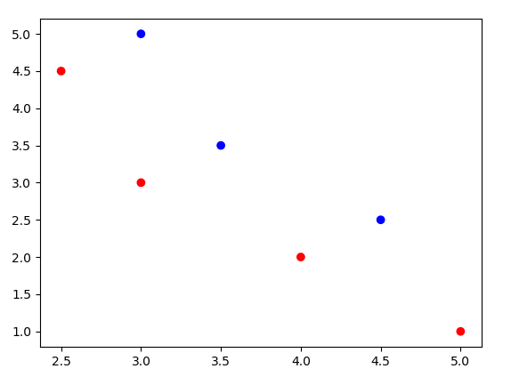

The goal of this article is to show the beauty of SVM and deliver enough information and intuition to reader who is interested in usage of SVM. Breaking SVM into small pieces could be quite demanding but I assure the reader that it will worth it.
I highly recommend the reader to firstly watch lectures which are given by Andrew Ng and Patrick Winston. While Andrew Ng provides very good intution, Patrick Winston shows the beauty of underlying matematics on SVM.
Table of ContentsTheory
Suppose the training data is linearly separable which means that there is at least one "line", one decision boundary such that y_i(wTx_i+b)>0 for all data points (x_i,y_i). I assumed that reader watch the videos and knows notation.
This question that I would like to ask reader which to choose if more than one decision boundary exists. One of them should be "better" than other. As it is known that Perceptron Algorithm will find any decision boundary which separetes correctly classifies all data points. SVM will not only find a decision boundary, it will find the "best" one.
It is proven that decision boundary is better than others in terms of their margin, closest data points to them. Therefore SVM tries to maximaze margin while correctly classifiying them
FORMULA Quadratic PRogramming Problem
FORMULA Lagrangian
 asdasd
asdasd
In this post, we wi11ll focus specifically on two of the most common boosting algorithms, AdaBoost and Gradient Boosting.
More Theory
More Theory,More TheoryMore TheoryMore TheoryMore Theory,More Theory,More Theory
Visualize
Libraries Used
import numpy as np
importmatplotlib.pyplot as plt aasdasd
aasdasd
 aasdasd